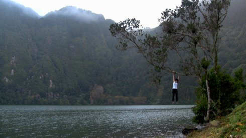
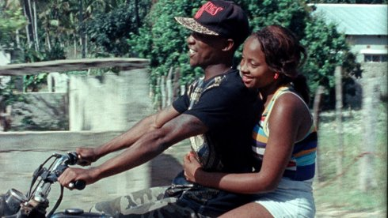
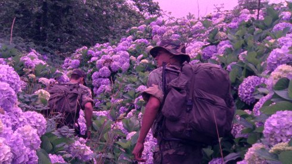

Cinema português
the 1980s generation
Saturday 13 oct 6.30 pm Filmmuseum München
The legacy of the legendary Portuguese filmmakers António Reis and
Margarida Cordeiro is the focus of the 13th edition of UNDERDOX. Two
programmes, developed in collaboration with Miguel Valverde
(Indielisboa Festival), present the traditions of Portuguese cinema
after the dictatorship and their influence on the younger
generation.
In the tradition of the Reis school, conveyed by the films of Pedro
Costa, a new generation of filmmakers, all born in the 1980s,
raises. The artist Salomé Lamas and the filmmaker
Jorge Jácome, whose Flores (Flowers) is
the most successful Portuguese short film of the year, work on the
margins of documentary productions. Ico Costa
returns with Nyo Vweta Nafta to Mozambique, where he spent
a year of his life. His documentary portrait of the youth in
Inhambane, filmed on 16mm, also subliminally reflects Portuguese
colonialism. Marta Mateus' Farpões, Baldios
(Barbs, Wastelands) is one of the most enchanting films of
this new generation. She portrays life in her home region of
Alentejo, which is characterised by drought and meagre poverty.
After the Carnation Revolution, the peasants occupied the lands
where they were once oppressed by their masters. The protagonists of
the film are the very old revolutionary fighters, who pass on their
spirit of resistance to the very young generation. Finally, Pedro
Peralta and Ascensão (Ascension) stage an
archetypal, biblical-mythological funeral fantasy that draws its
visual power from a dark naturalism borrowed from painting.
(Dunja Bialas)
Encounters with Landscape (3x)

| Salomé Lamas Portugal 2012 17 min – Portugiesisch B: Salomé Lamas – Mit Salomé Lamas
|
| "In late 2011 I arrived in Sete Cidades, Azores. I recalled Kant’s ideas on the sublime. We experience the sublime when our imagination fails to comprehend the greatness of natural events, in the process of determining concepts of understanding, but supplants this failure with a delight stemming from its ability to grasp these aspects of nature by virtue of an idea of reason." (Salomé Lamas) There is something absurd, abstract and inevitably entertaining in the quest implemented in Encounters with Landscape 3X – an attempt of self-exploration, of one’s own sensitivity, one’s own body. Inevitably citing “Fall” by Bas Jan Ader, Salomé Lamas’ encounters with the landscape chart imposed limitations, sometimes with violence, and are here exacerbated by placing a device which renders sound and image at two distinct experiential levels. (Centre d'Art Contemporain Genève)
|
Ascensão

| Pedro Peralta Portugal 2016 17 min – Portuguese B: Pedro Peralta – S: Francisco Moreira – K: João Ribeiro – T: Ricardo Leal
|
| At dawn a group of peasants tries to rescue the body of a young man from the inside of a well. Women veil their faces in silence while men endure the situation. In the center of it all, a mother awaits her son’s salvation. The wait is over. The boy’s body emerges from the depths of the earth. How can life cease to be when in nature there is an enduring renewal? From a distance the sun sinks into the horizon. There is a new day ahead.
|
Nyo Vweta Nafta

| Ico Costa Portugal/Mozambique 2017 22 min – 16mm on HD – Portuguese B: Ico Costa – K: Hugo Azevedo – S: Ico Costa, Eduardo Williams – M: Puto Zaca – P: Terratreme Filmes
|
| Shooting on 16mm film in Mozambique, director Ico Costa explores the textures of human behaviour as he follows young men who wonder what lies beyond their immediate surroundings. In the fragments of conversations captured in the Maputo market, a recording studio and on coconut trees, we find daily routines and tedium lead to chit-chat on desire, money and hope. In the interplay between performance and document, poetry emerges from fleeting everyday moments.
|
Flores

| Jorge Jácome Portugal 2017 26 min – Portuguese B: Jorge Jácome, David Cabecinha – K: Marta Simões – S: Jorge Jácome – T: Marco Leão – M: Terry Riley – P: João Figueiras / Blackmaria – With André Andrade, Pedro Rosa, Gabriel Desplanque, Jorge Jácome
|
| In a natural crisis scenario, the entire population of Azores is forced to evict due to an uncontrolled plague of hydrangeas, a common flower in these islands. Two young soldiers, bound to the beauty of the landscape, guide us to the stories of sadness of those forced to leave and the inherent desire to resist by inhabiting the islands. The filmic wandering becomes a nostalgic and political reflection on territorial belonging and identity, and the roles we assume in the places we came from.
|
Farpões, baldios
Barbs, Wastelands

| Marta Mateus Portugal 2017 25 min – Portugiesisch B+S: Marta Mateus – K: Hugo Azevedo – T: Olivier Blanc, Hugo Leitão – Mit Maria Clara Madeira, Gonçalo Prudêncio, Maria Catarina Sapata
|
| After the Carnation Revolution the peasants in the Alentejo region occupied the huge proprieties where they were once submitted to the power of their masters. The protagonists of this film, resistants of this struggle, tell their story to the youngsters of today, in their own words.
|